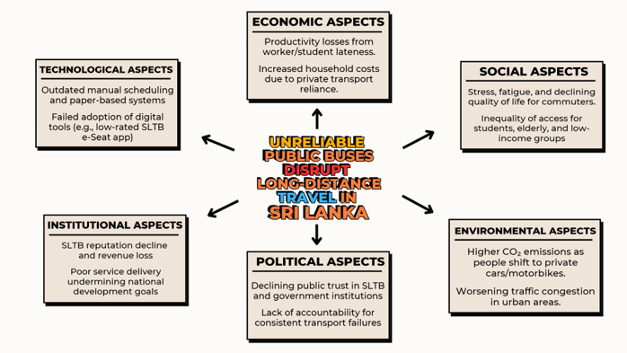
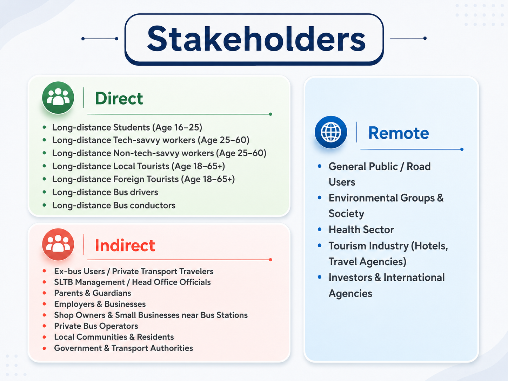
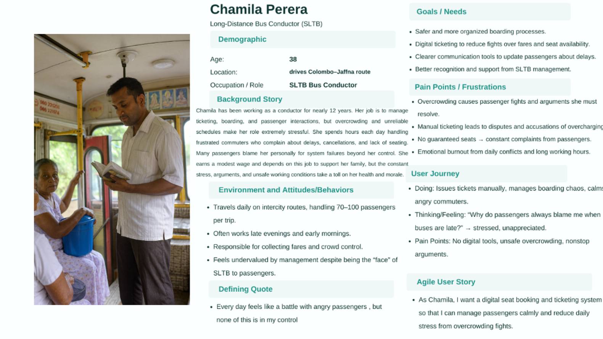
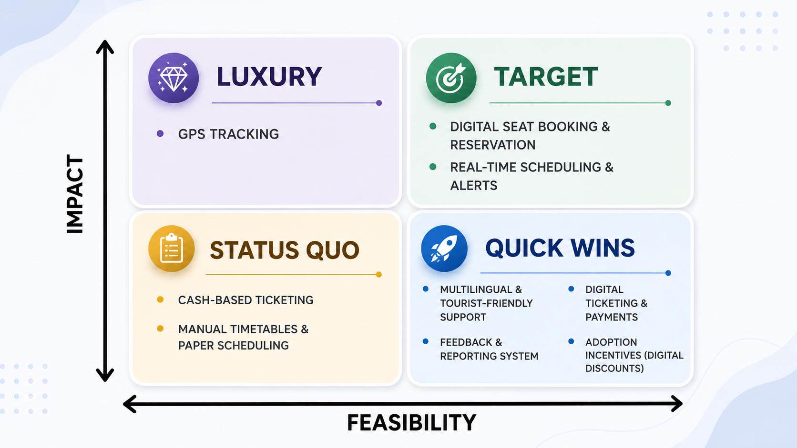
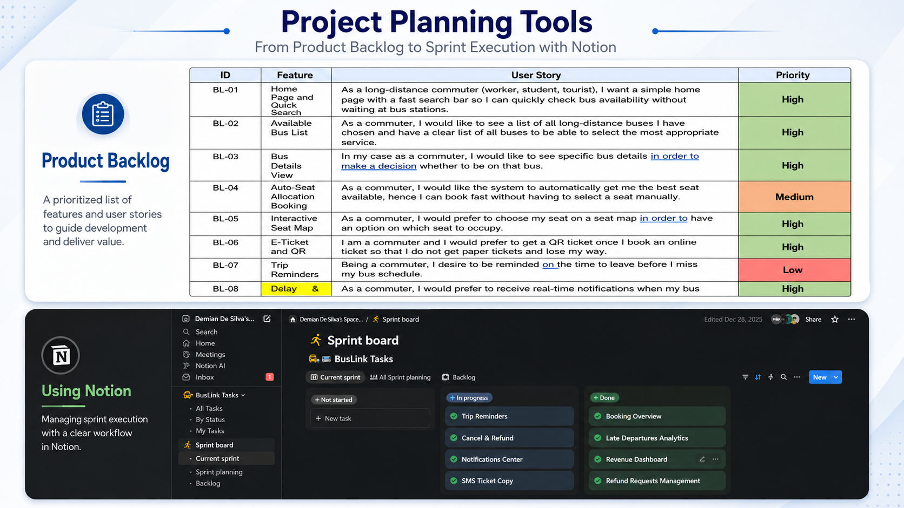
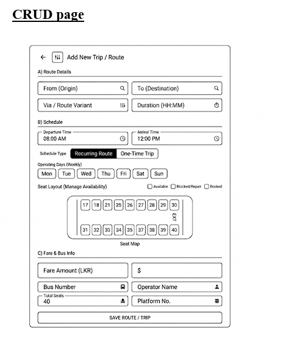
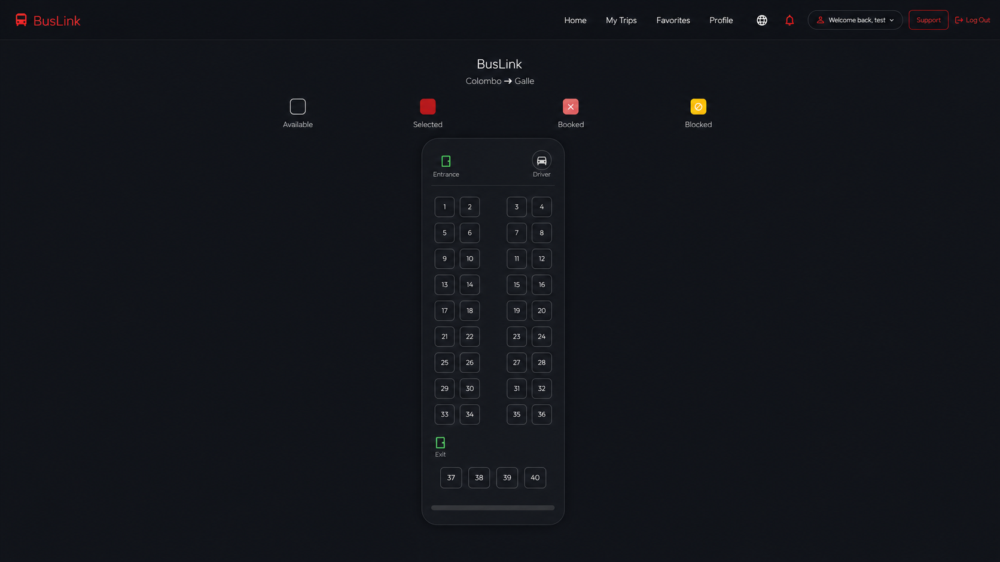
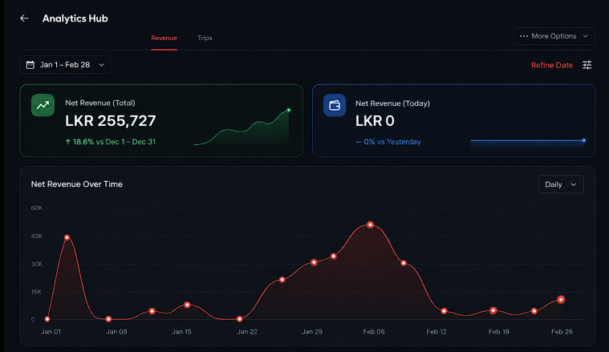
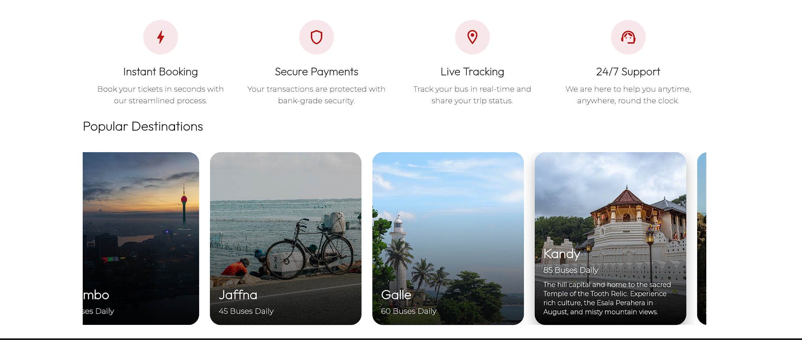
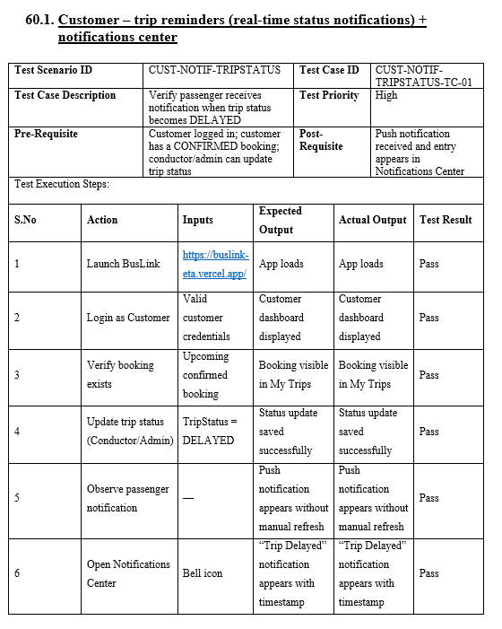

Background
I didn't just submit a report.
I ran BusLink like a real product from day one — from problem validation with the SLTB Chairman, to a shipped, test-validated system. Here's every phase, with receipts.
Validating the problem
before proposing a solution
SLTB receives nearly 150 complaints a day. I mapped the problem across economic, social, technological, environmental, political, and institutional dimensions — confirming this was a structural issue, not a minor inconvenience. No solution without evidence.

Mapping 15+ stakeholder groups,
surveying 102 real commuters
I categorized stakeholders into Direct, Indirect, and Remote groups, then ran a 102-response survey and 10+ interviews — including with SLTB's Chairman — to ground every decision in real user data, not assumptions.

From raw data
to a clear user need
I built user personas — including the SLTB bus conductor — to keep both passenger and operator needs visible throughout the entire design process. Data informs the product; the persona keeps it honest.

Impact vs. feasibility,
not gut feeling
I scored every proposed feature on impact and feasibility — separating must-build Targets from Quick Wins, future Luxury items, and features to retire entirely. Every cut has a reason.

Managing a real
product backlog
Every feature was logged with a feature ID, user story, and priority level (High / Medium / Low), tracked in Notion — turning strategy into a buildable, sequenced plan.
Managed in Notion
Wireframing
before development
I wireframed key flows — including the admin CRUD interface — before any code was written, so the development team built against a validated structure, not a guess. Design leads development, not the other way around.

3 sprints. From proposal to a working product.
Sprint 1 focused on discovery and proposal, Sprint 2 on build, and Sprint 3 on refinement and validation with real bus conductors.




Manually tested —
not just claimed
Every feature was tracked through a manual test log covering scenario ID, description, and execution result — backing the 300+ test cases and 99.65% pass rate with real, auditable records. Anyone can write a pass rate. I can show you the log.

"Product management takes guts: the guts to lead, decide, and stand behind the product you build successfully."